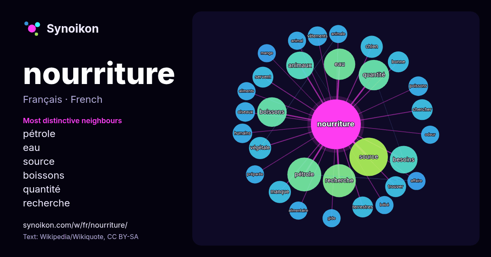

Français · mot populaire
nourriture
“food” · Les mots trouvés autour de lui dans 894 occurrences issues de Wikipédia, Wikiquote.

Voisins les plus spécifiques
- pétrole 20×
- eau 16×
- source 16×
- boissons 16×
- quantité 15×
- recherche 13×
- animaux 12×
- besoins 11×
- végétale 9.8×
- chien 8.8×
- terrestres 8.5×
- servent 8.4×
- chercher 8.3×
- manque 8.1×
- vêtements 7.2×
- trouver 7.2×
- oiseaux 7.1×
- bonne 7.0×
- gide 6.9×
- mange 6.9×
× = combien de fois plus souvent que dans le texte général de Wikipédia.
Voisins les plus fréquents
- source 27
- pétrole 21
- recherche 20
- eau 18
- quantité 17
- boissons 16
- animaux 14
- besoins 14
- également 12
- petits 11
- chien 9
- jour 9
- manque 9
- utilisé 9
- végétale 9
- bonne 8
- chercher 8
- espèces 8
- faire 8
- nouvelles 8
En contexte
- la nourriture non achetée par les consommateurs, en respectant tout de même la règlementation en vigueur. Alimentaire ou spirituelle, la nourriture désigne Wikipedia snippets · Nourriture
- La nourriture spatiale est un type de produit alimentaire créé et transformé pour être consommé par les astronautes dans l'espace. La nourriture a des Wikipedia snippets · Nourriture spatiale
- Les Nourritures terrestres est une œuvre littéraire d'André Gide, publiée en 1897, évoquant le désir et l'éveil des sens. Gide y développe le thème du Wikipedia snippets · Les Nourritures terrestres
- en bonne santé. La nourriture sèche est moins chère et plus facile d’utilisation que la nourriture humide. En effet, la nourriture sèche peut être laissée Wikipedia snippets · Nourriture pour chat
- « amour de ») mais celle-ci n'est qu'une forme de jeux avec de la nourriture. La nourriture peut être solide ou pas. Lorsque solide, elle est, le plus fréquemment Wikipedia snippets · Jeux avec de la nourriture
- (ISBN 978-7-5085-1102-3). Sur les autres projets Wikimedia : Tangyuan (nourriture), sur Wikimedia Commons Tangyuan (recette), sur Wikibooks dousha bing Wikipedia snippets · Tangyuan (nourriture)
- bol alimentaire, le sphincter se relâche et permet à la nourriture de passer. La nourriture pénètre dans l'estomac qui a alors trois tâches mécaniques Wikipedia snippets · Appareil digestif humain
- La relation entre la nourriture et le sexe a également été explorées dans le domaine du cinéma. La connexion entre la nourriture et la sexualité a été Wikipedia snippets · Nourriture et sexualité
Autres mots
- art
- automne
- carte
- chanson
- chat
- chemin
- cheval
- chien
- climat
- cloche
- cœur
- dieu
- désert
- eau
- famille
- forêt
- histoire
- hiver
- horloge
- jardin
- langue
- miel
- miroir
- monnaie
- montagne
- mort
- mère
- nature
- ombre
- pain
- pluie
- pont
- pouvoir
- printemps
- santé
- science
- sel
- silence
- temps
- tempête
- thé
- train
- travail
- trésor
- vie
- ville
- vérité
- étoile
- île
Précalculé le 2026-10-09 avec les paramètres par défaut (±5 mots, corpus moyen). La carte interactive peut l’actualiser avec des données en direct.
Interface traduite automatiquement ; corrections bienvenues.